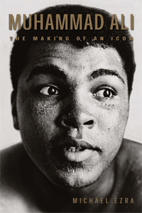

A look at the commercial intrigue that surrounds Muhammad Ali in and out of the ring
A look at the commercial intrigue that surrounds Muhammad Ali in and out of the ring


 A look at the commercial intrigue that surrounds Muhammad Ali in and out of the ring
A look at the commercial intrigue that surrounds Muhammad Ali in and out of the ring

|  |
Muhammad AliThe Making of an IconMichael Ezrapaper EAN: 978-1-59213-662-9 (ISBN: 1-59213-662-1) |
“Muhammad Ali is a terrific book. Disciplined, convincing, equipped to deliver on his bold and original thesis, Michael Ezra makes fresh sense not only of Ali as cultural icon and historical figure but of the vast Ali literature and mythos that surrounds him.”
—Carlo Rotella, Boston College, author of Cut Time: An Education at the Fights
Muhammad Ali (born Cassius Clay) has always engendered an emotional reaction from the public. From his appearance as an Olympic champion to his iconic status as a national hero, his carefully constructed image and controversial persona have always been intensely scrutinized. In Muhammad Ali, Michael Ezra considers the boxer who calls himself “The Greatest” from a new perspective. He writes about Ali’s pre-championship bouts, the management of his career and his current legacy, exploring the promotional aspects of Ali and how they were wrapped up in political, economic, and cultural “ownership.”
Ezra’s incisive study examines the relationships between Ali’s cultural appeal and its commercial manifestations. Citing examples of the boxer’s relationship to the Vietnam War and the Nation of Islam—which serve as barometers of his “public moral authority”—Muhammad Ali analyzes the difficulties of creating and maintaining these cultural images, as well as the impact these themes have on Ali’s meaning to the public.
Excerpt available at www.temple.edu/tempress
"[T]his book increases our understanding of how difficult it is to know the real Ali, a simple man paradoxically imbued with great complexity. Recommended."
—Library Journal
"Michael Ezra’s rigorously researched and engagingly written book at once illuminates and liberates one of our towering national figures. Stripping away the cant and fuzziness that has grown up around Muhammad Ali, Ezra delivers a fresh, intellectually challenging and ultimately invigorating understanding of the fighter and the man."
—Richard O’Brien, Boxing Editor, Sports Illustrated
"Even though the focus of [the] book is on the cultural image of Ali, Ezra covers many of the major fights in entertaining and educational ways. Sure there have been many books written about Ali over the years, but Muhammad Ali: The Making of an Icon is a fresh look at him, and provides not only that, but food for thought on how image can be managed for good and for ill."
— The Sacramento Book Review
"Well researched and well argued... Ezra's thoughtful study makes the reader wary of ever understanding the 'real' Ali. Ali loves magic, and his greatest trick has been spending so much time in the public gaze while concealing himself. Recommended."
—Choice
"[I]n moving away from biography as the sole jumping off point, what Ezra offers us is a quite fascinating look at the vagaries of public perception and the path with which this story has ebbed and flowed since Ali first broke into the public eye in the 1960 Rome Olympics as the brash young Cassius Clay.... In this repositioning (more proper positioning) of the Ali legend, Ezra reminds that the once unpalatable has become not only palatable but also the marketable, and he does so with a narrative quality that is enriched though its nimble phrasing, yeoman research, and effective jags into those less prurient corners of Ali's life that lend considerable authority and heft to what is by its very design a most taxing subject."
—The Journal of Sport History
"[T]his is a valuable book.... Ezra [provides] insights into how celebrity status arrives not just through good intentions and noble acts, but is shaped and conveyed by larger political, financial and economic structures."
—The Sixties
"[A] sophisticated, well-researched, and exciting book with a coherent thesis and organization."
—The Journal of Southern History
"Ezra’s study is original and incisive, based on a wealth of primarily newspaper and secondary sources. It’s a book that opens windows rather than shuts doors, a study that says much and reminds the reader that much remains to be said."
—American Studies
Acknowledgements
Introduction: Why Another Book about Muhammad Ali?
Part I: Louisville Sponsoring Group
Louisville's Favorite Son: The Professional Debut
Choosing Management: The Courtship of Cassius Clay
The Early Bouts, 1961-1962
Clay vs. Moore: The Seminal Text
The Most Hated Man in Boxing? The Early Bouts, 1963
Damage Control through Moral Authority: The Louisville Sponsoring Group's Specialty
The Relationship between Cassius Clay and the Louisville Sponsoring Group: A Summary
The Commercial Elements of Clay-Liston I
PartII: Nation of Islam
Main Bout Inc.: How Commerce Affects Culture
Carving Out Moral Authority: Ali's Race Man Phase
Part III: Good People
Forty Years of Ali: The Making of an Icon
The Legacy of Ali's Exile and the Nation of Islam
The Prodigal Son Returns
King of the World: The Consequences of Monarchy
Death of a Salesman
Lonnie Ali: The Savior
Thomas Hauser: The Literary Rehabilitation of Ali's Legend
Olympic Torch: From Literature to Television
Beyond Moral Authority: The Apotheosis of Muhammad Ali
Culture Meets Commerce: The Muhammad Ali Center, Naming Rights, and the Price of Moral Authority
The Backlash: Exploring Contradictory Meaning of Ali
Notes
Index
 | Michael Ezra is Chair of the American Multicultural Studies Department at Sonoma State University. The author welcomes feedback on this book and can be reached at mikeezra@hotmail.com. |
Sports
American Studies
African American Studies
Sporting, edited by Amy Bass.
As an international cultural activity for athleticism, spectatorship, and global cultural exchange, sport is unmatched by any other force on earth. And yet it remains a consistently understudied dimension of history and cultural studies. Sporting, edited by Amy Bass, aims to contribute to the study of sport by publishing works by people across a range of disciplines, by professional sportswriters, and by athletes to add substance to our still emerging notion of globalization.
© 2015 Temple University. All Rights Reserved. This page: http://www.temple.edu/tempress/titles/1923_reg.html.